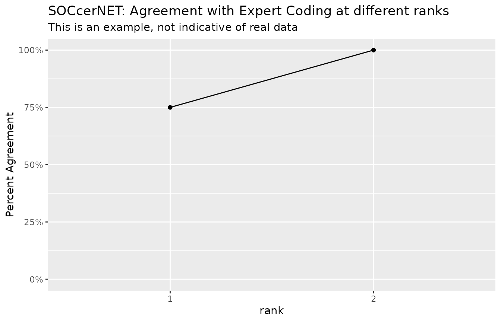

Built on tidyverse
Daniel Russ
2025-07-07
Built_on_tidyverse.RmdOccupational data is often nice and tabular, but sometimes you have data that is not so nice. If we have soccer results, we may only want to look at the top 3, and we may have 3 human coder results. Instead of using having columns soc2010_1,score_1,soc2010_2,score_2… soc2010_n,score_n you may want to simply using List columns. This is supported by data.frame and tibble. This allows us to put vectors as values. One drawback is the you need to map when you mutate instead of having a simple function.
If your are using socR, codingsystem and xwalks are built on top of tibbles. I implemented some of the dplyr verbs on codingsystems and crosswalk, but if a verb does not exist you can get the underlying tibble using as_tibble().
Lets make some fake data
results <- tibble(id=c("job-1","job-2","job-3","job-4"),
JobTitle=c("tv repairman","home plumber","fire fighter","President"),
JobTask =c("fix tvs","various plumbing work","put out fires, EMS","owns and operates"),
soc2010_1 = c("49-2097","47-2152","33-2011","11-1021"),
soc2010_2 = c("49-9099","47-3015","33-1021","11-1011"),
soc2010_3 = c("49-9031","49-9071","55-3019","11-9021"),
score_1 = c(0.9199,0.9866,0.9903,0.8812),
score_2 = c(0.0888,0.1003,0.0132,0.7980),
score_3 = c(0.0159,0.0337,0.0113,0.2286) )
results
#> # A tibble: 4 × 9
#> id JobTitle JobTask soc2010_1 soc2010_2 soc2010_3 score_1 score_2 score_3
#> <chr> <chr> <chr> <chr> <chr> <chr> <dbl> <dbl> <dbl>
#> 1 job-1 tv repair… fix tvs 49-2097 49-9099 49-9031 0.920 0.0888 0.0159
#> 2 job-2 home plum… variou… 47-2152 47-3015 49-9071 0.987 0.100 0.0337
#> 3 job-3 fire figh… put ou… 33-2011 33-1021 55-3019 0.990 0.0132 0.0113
#> 4 job-4 President owns a… 11-1021 11-1011 11-9021 0.881 0.798 0.229Let combine the soccer results and the soccer scores.
results <- results |>
mutate(soc2010_soccer=pmap(pick(starts_with("soc2010_")),\(...) c(...) ),
scores_soccer =pmap(pick(starts_with("score_")),\(...) c(...) )
) |>
select(id:JobTask,soc2010_soccer,scores_soccer)
results
#> # A tibble: 4 × 5
#> id JobTitle JobTask soc2010_soccer scores_soccer
#> <chr> <chr> <chr> <list> <list>
#> 1 job-1 tv repairman fix tvs <chr [3]> <dbl [3]>
#> 2 job-2 home plumber various plumbing work <chr [3]> <dbl [3]>
#> 3 job-3 fire fighter put out fires, EMS <chr [3]> <dbl [3]>
#> 4 job-4 President owns and operates <chr [3]> <dbl [3]>Now lets make some fake human coder results
coder <- tibble(id=c("job-1","job-2","job-3","job-4"),
JobTitle=c("tv repairman","home plumber","fire fighter","President"),
JobTask =c("fix tvs","various plumbing work","put out fires, EMS","owns and operates"),
soc2010_1 = c("49-2097","47-2152","33-2011","11-1011"),
soc2010_2 = c("","46-130",NA,NA),
soc2010_3 = c(NA,NA,NA,NA) )
coder
#> # A tibble: 4 × 6
#> id JobTitle JobTask soc2010_1 soc2010_2 soc2010_3
#> <chr> <chr> <chr> <chr> <chr> <lgl>
#> 1 job-1 tv repairman fix tvs 49-2097 "" NA
#> 2 job-2 home plumber various plumbing work 47-2152 "46-130" NA
#> 3 job-3 fire fighter put out fires, EMS 33-2011 NA NA
#> 4 job-4 President owns and operates 11-1011 NA NALets make sure that the human coder gave real codes. The socR package comes with a predefined function is_valid_6digit_soc2010, let’s not use it but reinvent it. We will use the soc2010 coding system that comes with socR
is_valid_6digit_soc2010 <- valid_code( filter(soc2010_all,Level==6) )
coder |> mutate( across(c(starts_with("soc2010_")),is_valid_6digit_soc2010))
#> # A tibble: 4 × 6
#> id JobTitle JobTask soc2010_1 soc2010_2 soc2010_3
#> <chr> <chr> <chr> <lgl> <lgl> <lgl>
#> 1 job-1 tv repairman fix tvs TRUE FALSE FALSE
#> 2 job-2 home plumber various plumbing work TRUE FALSE FALSE
#> 3 job-3 fire fighter put out fires, EMS TRUE FALSE FALSE
#> 4 job-4 President owns and operates TRUE FALSE FALSELets combine all the results so that the codes are valid
coder <- coder |> mutate(
soc2010_coder= pmap( pick(starts_with("soc2010_")),\(...){
codes = c(...)
codes = codes[is_valid_6digit_soc2010(codes)]
} ) ) |>
select(id,soc2010_coder)Now we can join the soccer results and the coder results.
combined_results <- left_join(results,coder,by="id")
combined_results
#> # A tibble: 4 × 6
#> id JobTitle JobTask soc2010_soccer scores_soccer soc2010_coder
#> <chr> <chr> <chr> <list> <list> <list>
#> 1 job-1 tv repairman fix tvs <chr [3]> <dbl [3]> <chr [1]>
#> 2 job-2 home plumber various plumbin… <chr [3]> <dbl [3]> <chr [1]>
#> 3 job-3 fire fighter put out fires, … <chr [3]> <dbl [3]> <chr [1]>
#> 4 job-4 President owns and operat… <chr [3]> <dbl [3]> <chr [1]>Lets see how soccer did with these jobs. Since there are 3 SOCcer results the rank can be 1,2,3,or 4+. Let’s make this an ordered factor with levels “1”,“2”,“3”,“4+”
factor_levels <- 1:4
factor_labels <- c(1:3,"4+")
dta <- combined_results |>
mutate(rank= map2_int(soc2010_coder,soc2010_soccer,\(x,y)min(match(x,y)) ),
rank=ordered(rank,factor_levels,factor_labels))
dta
#> # A tibble: 4 × 7
#> id JobTitle JobTask soc2010_soccer scores_soccer soc2010_coder rank
#> <chr> <chr> <chr> <list> <list> <list> <ord>
#> 1 job-1 tv repairman fix tvs <chr [3]> <dbl [3]> <chr [1]> 1
#> 2 job-2 home plumber various p… <chr [3]> <dbl [3]> <chr [1]> 1
#> 3 job-3 fire fighter put out f… <chr [3]> <dbl [3]> <chr [1]> 1
#> 4 job-4 President owns and … <chr [3]> <dbl [3]> <chr [1]> 2
dta |> group_by(rank) |> summarise(n=n()) |> mutate(pct=cumsum(n)/sum(n) ) |>
ggplot(aes(x=rank,y=pct,group = 1)) + geom_point() +
geom_line()+
scale_y_continuous("Percent Agreement",limits = c(0,1),labels = scales::percent) +
labs(title="SOCcerNET: Agreement with Expert Coding at different ranks",
subtitle = "This is an example, not indicative of real data")
By default SOCcer returns the top-10 scoring codes, in this example
only 3 are given and for the 4 jobs all are successfully coded by
soc2010_1 or soc2010_2 (rank=1 or rank=2). From this small and very easy
to code set of jobs, you can see that SOCcer agreed with the experts 75%
at the most detailed level and 100 of the jobs agreed if you include two
codes (Do not expect results this good.).
There is no point in continuing the line beyond 2.
I hope you see how we can use the list columns and the purrr::map
family to handle the case of multiple results. If you do not like map,
you may be able to use dplyr::rowwise to handle the
lists.
When you are ready to write out the data, you probably don’t want to
use csv format. I suggest using jsonlite::write_json or if
you are adventurous use arrow::write_feather